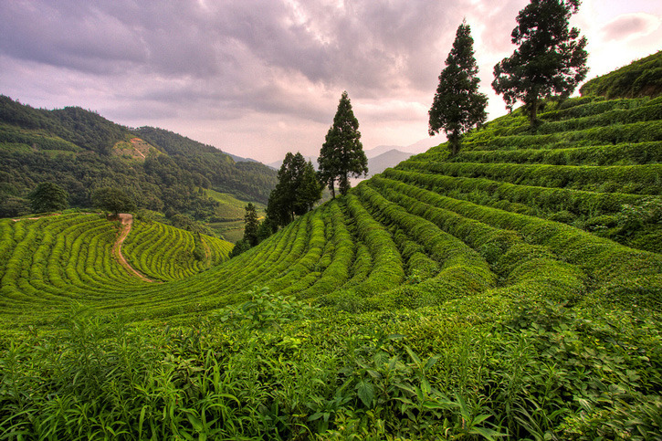

تاريخ تسمية الشاي (Tea) له عدة نظريات. واحدة من النظريات تعود إلى اللغة الصينية حيث يسمى الشاي بكلمة "تشا " (Cha). وفي القرن السابع عشر، انتقلت هذه الكلمة إلى هولندا وألمانيا وأصبحت تُنطق "تي" (Tea) في اللغتين. ومن هنا انتشرت عبر أوروبا والعالم. وجدير بالذكر أن هناك نظرية أخرى تشير إلى أن كلمة "تشا" (Cha) تعني شاي في العديد من اللغات الآسيوية المختلفة مثل اليابانية (Cha) والكورية (Cha) والفيتنامية (Tra)، ولذلك يُعتقد أن الكلمة انتقلت من الصين إلى الدول الأخرى في آسيا ومنها انتشرت إلى العالم الغربي. سمي بهذا الاسم نسبة لشجرة الشاي التي يأخذ منها اوراق الشاي فيطلق اسم الشاي على شجرة الشاي وعلى المشروب الذي يصنع منه الاوراق وهو نبات دائم الخضرة وموطنه الاصلي هو شرق اسيا تحتاج زراعه الشاي الى تربة خصبة خفيفة وطقس حار وهواء رطب ومطر غزير ويعتبر مشروب الشاي من اشهر مشروبات العالم وأمتعها ويتناوله البعض حلو ويتناوله البعض الاخر بلا سكر فيبقى بطعمه الطبيعي ومنهم من يحبه مع الحليب.